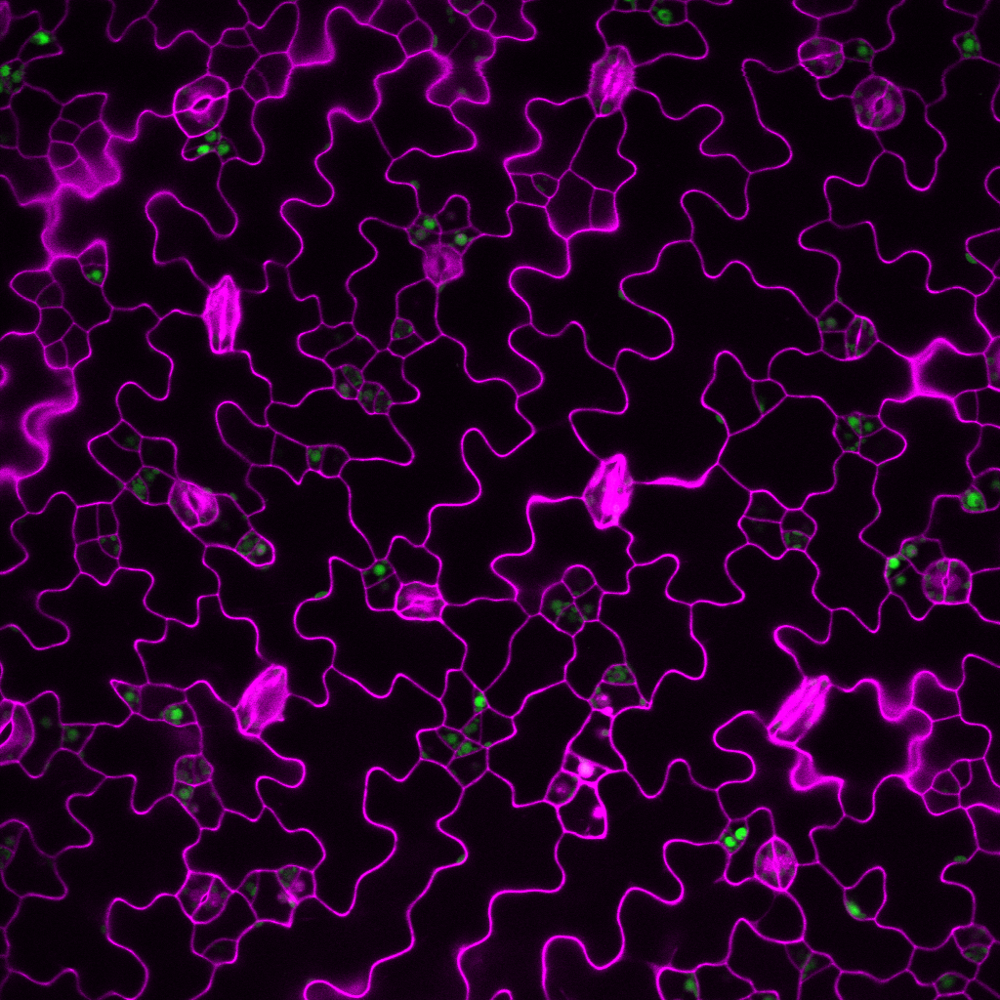

James Rowe AKA Jim
After a PhD in Keith Lindsey’s lab, I came to work for Stuart in February 2016. I provide technical support to the lab and help Nick characterise the molecular mechanisms involved in light regulated stomatal development. Plants lacking the light receptor PhyB are more water use efficient, meaning they use less water to fix a given amount of carbon. Understanding why this is so may help breeders produce crops that use less water, without compromising on yield.

How we're doing it
We hope to use a variety of techniques including gene expression analysis, phenotype analysis, confocal microscopy and mathematical modelling to better understand why light insensitive mutants have better water use efficiency.

Publications
- Rowe, J., Topping J.F., Liu, J., Lindsey, K. Abscisic acid regulates root growth under osmotic stress conditions via an interacting hormonal network with cytokinin, ethylene and auxin. New Phytologist 1469-8137
- Liu, J. Rowe, J., Lindsey, K., (2014). Hormonal crosstalk for root development: a combined experimental and modelling perspective. Frontiers in Plant Science 5.
- Moore, S.P.M., Zhang, X., Mudge, A., Rowe, J., Topping, J.F., Liu, J., and Lindsey, K. (2015) Spatiotemporal modelling of hormonal crosstalk explains the level and patterning of hormones and gene expression in Arabidopsis thaliana wildtype and mutant roots. New Phytologist 207: 1110–1122.
- Mehdi, S., Mudge, A., Rowe, J., Liu, J., Topping, J.F. & Lindsey, K. (2016). The POLARIS Peptide: Role in Hormone Signalling and Root Growth. In Annual Plant Reviews: Peptide Signals in Plants. Huffaker, A. & Pearce, G. Wiley-Blackwell. in press.